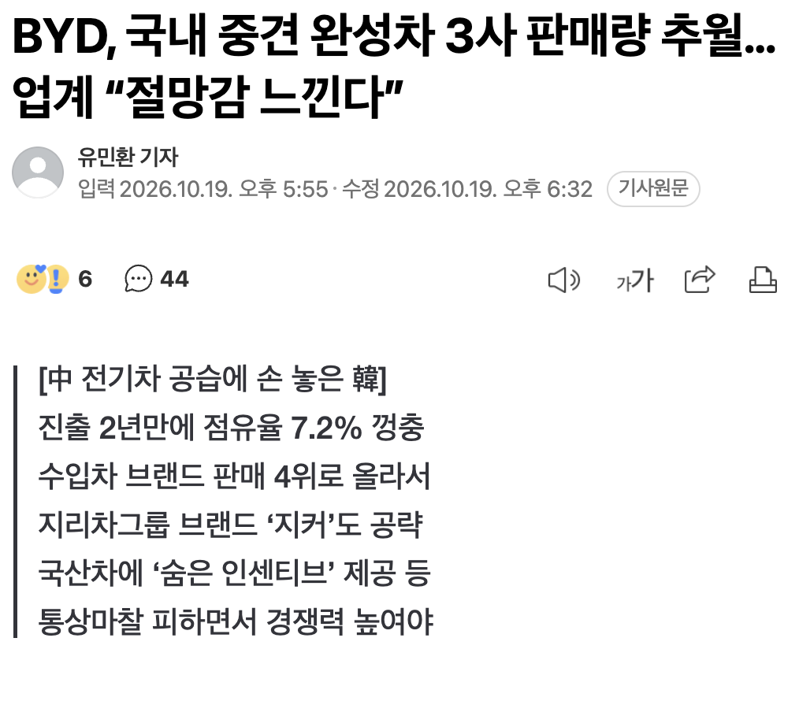
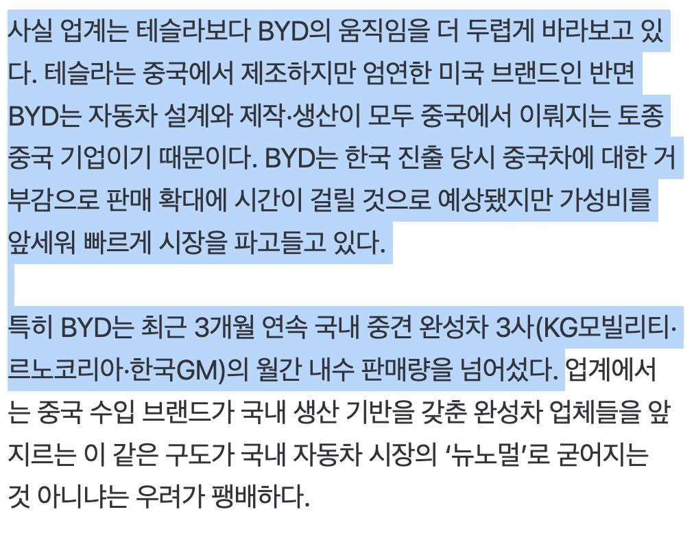
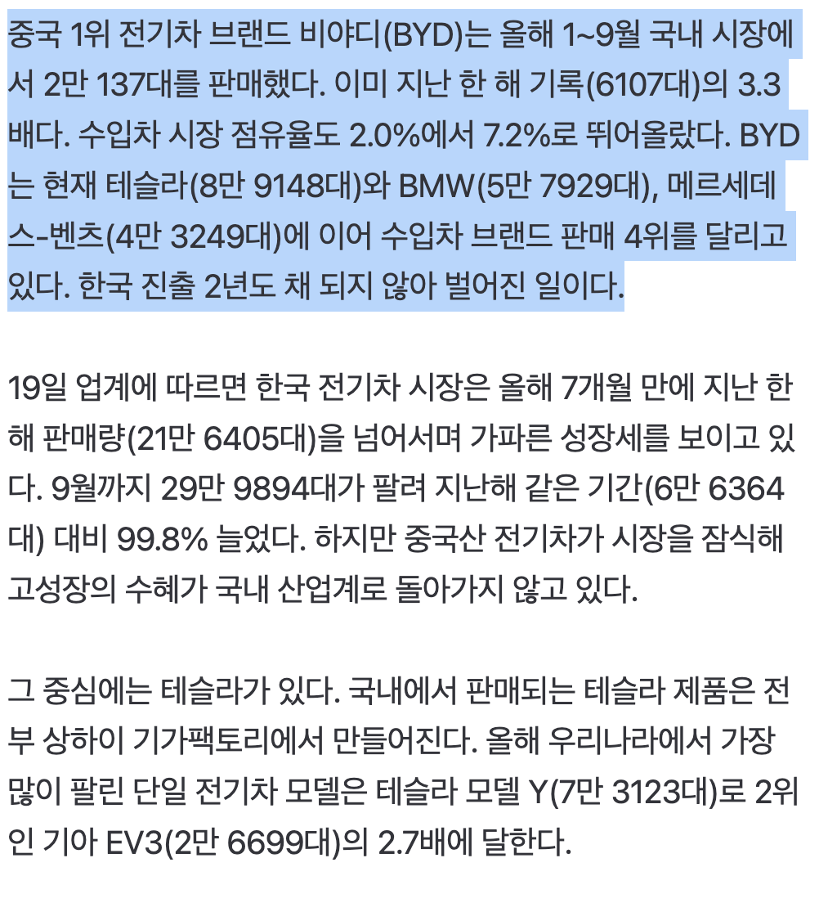
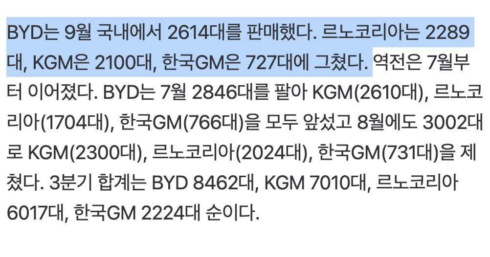
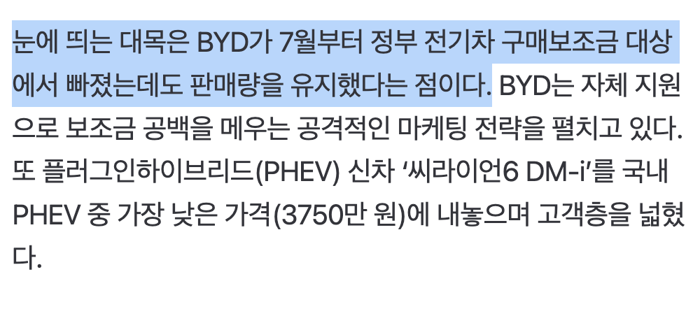

https://n.news.naver.com/article/011/0004672847?cds=news_media_pc





https://n.news.naver.com/article/011/0004672847?cds=news_media_pc
너는 매우 계급주의적 사고방식을 가지고 있구나
마르크스 주의자니?
사업의 영역에 접근할 수 있는 사람은 도대체 누구인가요? 일반 주주도 충분히 가능하다 이거죠? 소액주주라고 차별없이 의견을 개진하고 지분만큼 의결권 행사 가능하다 이거죠? 문앞에서 돌려보내지 않고? 저보다는 마르크스주의에 더 가까우신 거 같은데
주주를 보호하지 않는 우리나라 금융시장의 현실은 입법으로 해결할 일이고.
사업의 영역에 접근할 수 있는 범위는 당연히 주주 한정으로 해야죠.
이걸 왜 묶어서 말합니까?
쓰다보니 쓸데없는 말이 많이 섞였음. 주주가 단독결정하는 것도 아니고, 경영진의 의사결정에 노조가 영향력을 행사하면 안된다는 말도 뭐 이미 경영진 자체가 노조, 내부환경 영향을 주고 받는 걸 전제로 계획을 짜고 행동하고 있는데 거기에 안된다고 해봤자. 무소불위의 지도력으로 사람을 홀려서 독단적으로 움직이는 회사도 아니고.
그렇다고 노조 또는 직원이 고도의 전략적 의사결정으로 개입하는가? 그런것도 아님. 로봇 들이면 우리 짤리니까 안된다. 돈달라 정도의 자기보전에 가까운 요구인데 현대사회에서 사람쓰면서 이런 건 감안하는거지.
흉기는 북미만 믿어야지..
큰일은 큰일이네…. 단순 혐오 조롱을 넘어서 좆되가고 잇는중이긴 함
개드립에서 까면 깔수록 더 많이 팔리는ㅋㅋㅋㅋㅋㅋㅋㅋㅋㅋㅋㅋ
근데 흉기 너무 비쌈 씨발 아방이가 4천만원 말이되냐
아반떼 옵션질 하게 만들어놔서, 깡통이야 2천 중반인데
제대로 된 옵션 달고 뽑으려면 3천 중반이상, 풀옵이 4천 중반까지 가는데
솔찍히 풀옵션에 3천 중반 SUV가 그것도 하브로 선택이 가능하면
혹하고도 남지
프로모션을 빡세게 돌리더라 일단 차량부터 존나까는듯 돈써서 그럼 뭐 소비자 입장에선 방법이 있나 싶다가도 수리썰 들어보면 왜사지 싶긴함
테슬라가 아무리 짱.깨 차여도
진짜 짱차처럼 브레이크부품 플라스틱 쓰다가
급정지시 페달 부러지진 않자너~
ㅋㅋ
아무리 짱카니 뭐니 해도 솔직히 가성비 앞에 장사없는건 맞는거같음. 게다가 점유율 높아지면 심리적으로도 남들 시선 덜 고려하게되고... 뭐 수리비니 뭐니 이런건 이제 판매량 올라가고 있는 시기니까 일정기간 지나서 다시 조롱사이클이 올지 아니면 진짜 뉴노멀로 굳을지 지켜봐야할듯
다른건 둘째치고 요즘 흉기차 가격책정이 진짜 감이 조또 없는거같아서 걱정이긴함 ㅋㅋㅋ
르쌍쉐는 진짜 아가리해라 니네는 진짜 자동차 회사라고 부르기도 아까울수준임
ㅇㅈ
난 가성비와 목숨을 맞바꾸는 짓은 못할듯ㅋㅋ
무슨 절망감? ㅋㅋㅋㅋㅋㅋㅋㅋㅋㅋㅋㅋㅋㅋㅋㅋㅋㅋㅋㅋㅋㅋㅋㅋㅋㅋㅋㅋㅋㅋㅋㅋㅋㅋㅋㅋㅋㅋㅋㅋㅋㅋㅋㅋㅋㅋㅋ
자기들이 선택한 절망감! 중국산 들고와서 조금이라도 비싸게 받아볼려는 디자인 망한 쌍용 당당하게 중국플렛폼 들고와서 양심없는 가격 내놓은 르노 아예 팔생각이 없는 지엠 웅장하다 웅장해
BYD, 배운다
사업의영역이란건 특수계층의 전유물인가?